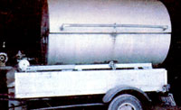

When the summertime rolls around in Groveport, Ohio, folks start to think about holding pig roasts. At the same time, my father, Earl Watkins, takes his recycled, homemade hog roaster out of storage. That device, along with Dad's culinary talents, is much in demand, at picnics for his own family and friends, as well as at reunions, bachelor parties, church socials and more.
SALVAGE SAVVY
A few years ago, my father used the more customary "pit" method for cooking barbecue, but despite the fact that he placed pieces of scrap tin over the hole's top, Dad felt he was losing too much heat and using too much fuel when preparing his roasts in that manner.
To solve the problem, he found an old 300-gallon gas tank, cut the cylinder in half horizontally and fastened the two pieces together with pipe hinges. For a spit, Dad rescued the shaft from a retired combine and salvaged the machine's 12" pulley as well. This is hooked up with a drive belt to the gearbox and motor from an ancient Maytag wringer washer and automatically rotates the spit while the meat is roasting. A belt-tightener and a shaft for the gearbox were also scavenged from a broken-down lawn mower.
GOING WHOLE HOG!
Obtaining a hog for my family's hog roasts is never a problem, since my brothers, Doug and Dave, raise them, so the cooker has been tested on pigs of all sizes, from 50 to 300 pounds, live weight. And the portable "pit" has worked even better than its creator anticipated. A full-sized porker, he says, can be prepared in seven hours, using only 40 to 50 pounds of charcoal, which is placed on an expanded metal screen at the bottom of the cooker. (The "invention" also does a fine job of roasting venison, beef and chickens. A perforated metal grill, laid over the coals, holds the smaller cookables.)
For best results, Dad always skins his pigs before he barbecues them, and-about two hours prior to chowtime-uses a softbristled, wooden-handled car-washing brush (he says paintbrushes don't work as well) to begin basting the meat with my mom's special sauce.
This savory mix, which keeps the pig moist, tender and scrumptiously tasty, consists of 64 ounces of ketchup, 24 ounces of chili sauce, 2/3 cup of prepared mustard, 2 tablespoons of dried mustard, 3 cups of firmly packed brown sugar (or, if you'd prefer, you can substitute 1-1/2 cups of honey), 4 tablespoons of freshly ground coarse black pepper, 3 cups of wine vinegar, 2 cups of lemon juice, 1 bottle of thick steak sauce, a few shakes of Tabasco sauce, 1/2 cup of Worcestershire sauce, 2 tablespoons of soy sauce, 4 tablespoons of salad oil, 2 cans (24 ounces) of beer, and 2 small buds of minced or pressed garlic.
What's more, when the diners have had their fill (and, usually, then some!), Dad carefully cleans every scrap of meat from the carcass, and these leftovers are mixed with the remaining sauce and frozen in convenient-sized packages, ready to be used for lip-smacking sandwiches.
LINED-UP AND WAITING
By the middle of August and early September, another Watkins specialty, sweet corn, is added to our outdoor feasts. To prepare it, my father uses an old butchering kettle propped over an open fire, and cooks the ears, with the husks left on, for seven minutes in boiling water, while guests stand in line waiting for the late summer treat!
These days, in fact, Earl and his hog roaster are in such demand that he regretfully has to turn down a lot of requests for his time and talents. And although Dad has never charged for the use of his cooker or his cooking services, anyone who needs some supplemental income may well be able to turn a similar barbecue maker into the basis of a fine part-time portable bus business.
|
 The barbecue "pit" is portable. |
Basting keeps the meat tender and juicy. |
An old washing-machine motor is used to turn the spit automatically. |
|
Plans for the portable pig roaster. |
|
|